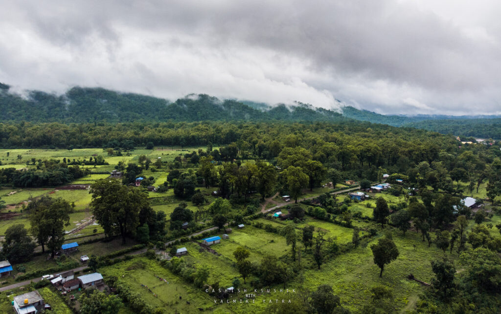

Valmiki Tiger Reserve


West Champaran
Few Clouds
31.4°C
Feels Like32.3°C
Wind2.18 m/s
Pressure1011 hPa
Valmiki Tiger Reserve forms the eastern most limit of the Himalayan Terai forests in India and is the only tiger reserve of Bihar. Situated in the Gangetic Plains bio-geographic zone of the country, the forest has combination of bhabar and terai tracts. Valmiki Tiger Reserve lies in the north-western (mostly in the West Champaran) district of Bihar. Name of the district has been derived from two words Champa and Aranya meaning Forest of Champa trees.
Sanctuary is reported to shelter of 250 species of birds 53 mammals, 145 birds, 26 reptile and 13 amphibians and Tiger Reserve.